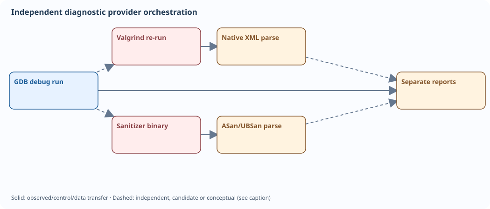

32 · Independent Valgrind and sanitizer diagnostics #
Key terms #
| Term | Plain meaning |
|---|---|
| Independent execution | A new run, distinct from the GDB run. Address and allocation order may change. |
| Stage status | A separate result for each tool: succeeded, failed, skipped or timed out, with partial evidence if available. |
>
The big picture #
Diagnostic passes rerun the program: they do not observe the same allocation lifetimes or memory addresses as GDB's primary run. The C instrumentation and verified PID-local event stream are described in Allocator runtime and Heap timeline. trace_program_inner(config: TraceConfig) -> Result<DebugSessionTrace> first builds a debug executable with the wrapper and a distinct sanitized executable (src/trace.rs:226-237,313-320), then schedules independent analyses after the GDB phase (:640-849). The program's execution outcome is not replaced by a Valgrind failure.
Source file: src/valgrind.rs #
Launch and report ownership #
run_valgrind(binary: &Path, program_args: &[String], working_directory: Option<&Path>, limits: &ExecutionLimits, xml_path: &Path, _event_file: &Path, valgrind_path: Option<&str>) -> Result<ValgrindRun> (src/valgrind.rs:39-133) executes valgrind --tool=memcheck --leak-check=full --show-leak-kinds=all --track-origins=yes --xml=yes --xml-file=<path> <debug-binary> <args>. An explicit tool path overrides PATH. It removes C_TRACE_EVENT_FILE so wrapper table roots cannot change leak classification; the _event_file argument is unused. Separate bounded stdout/stderr pipes and a separate XML file prevent client stderr from corrupting XML (:48-79); diagnostic resource limits, a process group and supervised deadline apply. ValgrindRun owns optional native report, failure reason, exit/timeout/cancellation, captured output and XML path (:28-37). Reading XML is capped by min(max_trace_memory_bytes,16 MiB) (:85-106); missing root or read/parse failure is a failure, not an empty clean report.
parse_valgrind_xml(xml: &str) -> Result<ValgrindReport> (:168-262) uses roxmltree, requires a valgrindoutput root, and marks native output complete only if a FINISHED status exists. It reads heap_summary (bytes/blocks at exit, allocations, frees, bytes allocated), all_heap_blocks_freed, and each <error> including leak-kind byte sums. Native missing numbers remain nullable in observed_summary; legacy numeric totals can default to zero and must not be read as observed zero (:179-258). parse_native_u64(text: &str) -> Option<u64> strictly validates comma-grouped Valgrind counters such as 4,152 (:271-286). parse_error(node: roxmltree::Node) -> ValgrindError captures kind, description, unique ID, nullable leaked bytes/blocks, primary and auxiliary stacks; parse_frame(node: roxmltree::Node) -> ValgrindFrame retains IP/module/function/path/line when available (:288-374). Valgrind supplies native errors and summary, not a time-indexed GDB heap history.
recover_errors(xml: &str) -> Option<ValgrindReport> (:139-166) scans for complete <error>...</error> fragments if the full XML parse fails, parses each fragment as XML, and returns only complete native errors. It never fabricates a heap summary; parse_error/output_complete qualify recovery. If nothing complete survives, there is no report. A timed-out run may have a partial report, never an automatically clean one (run_valgrind:85-133; src/trace.rs:705-757).
Source-site candidates, not cross-run IDs #
pub fn correlate_with_allocations(report: &mut ValgrindReport, allocation_sites: &[(String, u32, u64)]) (src/valgrind.rs:376-429) is a retained public entry point, not called by trace_program_inner. It ignores tuple allocation IDs, clears existing related_allocation_ids, and, only when an absolute <dir>/<file> and an absolute primary source path have equal path and line (canonicalized where possible), emits an ID-free source_site_candidates entry with evidence="same_source_site_independent_run_not_allocation_identity". Different directories with the same basename, relative paths and matching addresses cannot prove the allocation. Old imported reports may still contain legacy IDs until explicitly re-correlated; the production pipeline does not generate these links (src/trace.rs:711-716). The later release closure supersedes the earlier conditional audit on this helper. No exact cross-execution allocation-event ID is available.
Source file: src/sanitizer.rs #
Triggered separate execution #
run_sanitized(binary: &Path, program_args: &[String], working_directory: Option<&Path>, limits: &ExecutionLimits) -> SanitizerReport (src/sanitizer.rs:20-80) starts the separately built sanitized binary with the same args/directory, null stdin, bounded piped stdout/stderr, process group, diagnostic limits and supervised deadline. ASan replaces the allocator, so its addresses/events cannot be merged with wrapped GDB telemetry (:1-13). Spawn failure produces reproduction="skipped" and an explanation; otherwise the report includes native exit/timeout/cancellation, UTF-8-lossy output excerpts (stdout 4096, stderr 8192 bytes) and an output_complete flag based on truncation/timeout/cancellation (:38-69). truncate(s: &str, cap: usize) -> String respects UTF-8 boundaries (:82-92).
parse_sanitizer_output(stderr: &str, stdout: &str, report: &mut SanitizerReport) (:94-160) prefers SUMMARY: AddressSanitizer:; otherwise looks for ASan ERROR:/marker, then UBSan runtime error:. It records category, message, source file/line/column when parsable, and up to 32 textual stack frames; extract_asan_category(line: &str) -> String and extract_location(line: &str) -> Option<(String,u32,Option<u32>)> perform bounded text extraction (:188-211). Matching a report marker makes the native pass reproduced; absent a marker, timeout/cancellation/nonzero exit is inconclusive, while a successful clean exit is completed_normally (:69-79). These are outcomes of the sanitized run, not proofs that GDB's crash reproduced. Text parsing may have missing location evidence.
matches_crash(report: &SanitizerReport, crash: &CrashReport) -> bool (:162-186) compares recorded report/stack file+line against primary-crash backtrace file+line, accepting exact text or successfully canonicalized equal paths. It does not compare addresses/PIDs or establish exact operation identity. In run_sanitizer_pass(...) -> Option<SanitizerReport> (src/trace.rs:49-106), a native reproduced diagnostic becomes diagnostic_observed unless it matches an existing primary crash; only a matched crash receives asan_summary. Stage health distinguishes completed, failed, timed-out, cancelled and skipped passes. A matching site supports a crash correlation, not equivalence of run histories.
Scheduling in src/trace.rs #
SanitizerTrigger offers never, on_crash, default on_crash_or_valgrind_error, and always (src/config.rs:155-168). If crash/always already meets the trigger and the sanitized build succeeded, trace_program_inner runs sanitizer before Valgrind so a slow memcheck cannot consume its session window (src/trace.rs:644-680). Otherwise it runs Valgrind when installed and within deadline, preserving native errors without allocation-ID correlation (:682-785); for a clean primary run in the default trigger, Valgrind errors can then request sanitizer (:787-849). The two passes never share an inferior process. Missing Valgrind, failed sanitizer build, exhausted deadline or cancellation produces an explicit skip/failure reason rather than a negative diagnostic (:392-414,777-847). trace.stage_results, sanitizer_report and valgrind_report are assembled independently (:1007-1009). The V2.1 recording contract describes stage-level budgets.
Tests and caveats #
src/valgrind.rs:439-622 tests grouped/missing counters, complete-error recovery from truncated XML, UAF/leak fixture stacks and leak sizes, invalid XML, and site-only correlation including same-basename collisions and legacy IDs. src/sanitizer.rs:241-297 tests ASan overflow, UBSan location, clean output and Unicode-safe truncation. tests/release_closure_8dr.rs supplies a real GCC/Valgrind numeric-address collision oracle; equal numeric mappings across processes are not malloc identity, and current CLI Valgrind errors retain zero primary allocation links (release findings). Neither a missing XML file, a truncated report nor a clean sanitized rerun proves absence of a bug in the primary run. There is no supported exact diagnostic-to-GDB heap-event join.
Diagram notes #
Independent diagnostic processes #


Valgrind and sanitizer runs produce separate reports and never become primary-run allocation identities.